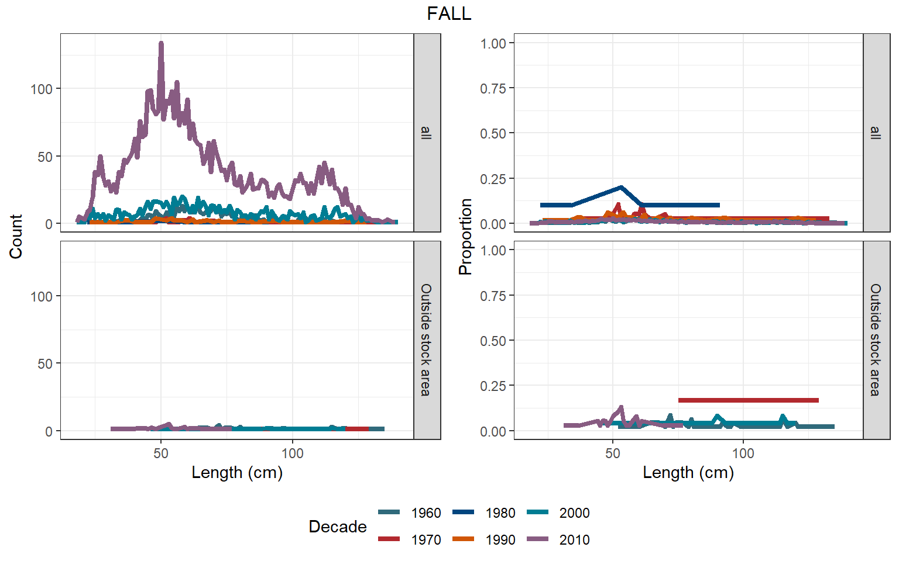
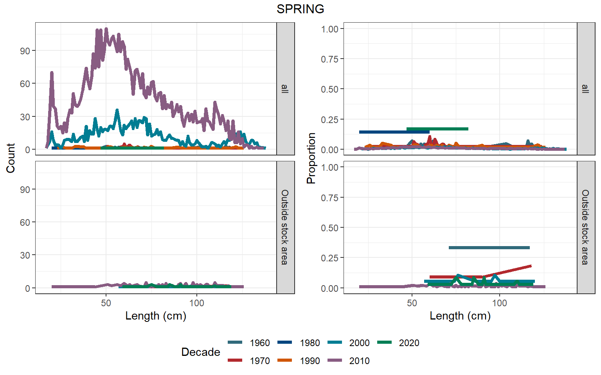
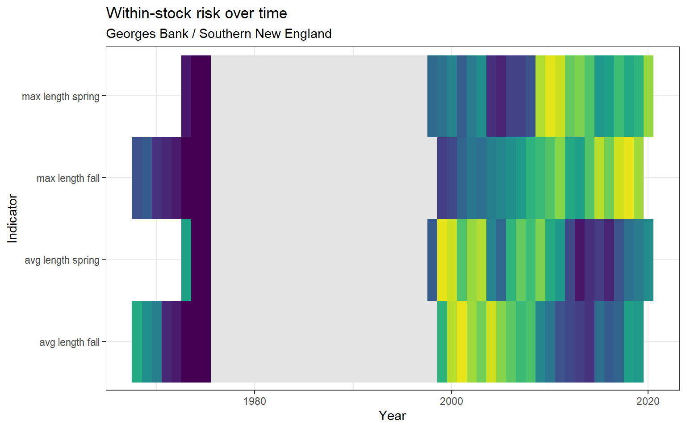

3.1 Length
Length data were pulled from survdat. Only years with more than 10 fish lengths were considered for analysis.
3.1.1 Figures
Overview

(#fig:length_freq-1)Barndoor skate

(#fig:length_freq-2)Barndoor skate

(#fig:length_freq-3)Barndoor skate
Summary statistics
Separategeom_gls() functions were fit for the minimum, mean, and maximum lengths; trend lines are only shown when the trend was statistically significant, so some plots may have fewer than three trend lines. Please note, sometimes the survey observed a small number of fish outside of the defined stock area.

Figure 3.1: Barndoor skate

Figure 3.2: Barndoor skate

Figure 3.3: Barndoor skate
Risk
See Methods for risk calculation details.
Rank of change compared to historical, ranked among stocks

Figure 3.4: Barndoor skate
Rank of value (magnitude) compared to other stocks

Figure 3.5: Barndoor skate
Rank of value (magnitude) within a single stock, compared to all years

Figure 3.6: Barndoor skate
3.1.2 Summary
| Season | Region | Mean value +- SD (n fish, n years) | Mean value +- SD (n fish, past 5 years) | Range (total) | Range (past 5 years) |
|---|---|---|---|---|---|
| FALL | all | 66.59 +- 26.03 (5,809, 28) | 67.92 +- 26.12 (2,311, 5) | 18 - 140 | 19 - 139 |
| FALL | Outside stock area | 74.48 +- 25.31 (33, 2) | 52.07 +- 6.94 (14, 1) | 44 - 135 | 44 - 69 |
| SPRING | all | 65.02 +- 25.98 (6,605, 25) | 66.57 +- 24.54 (2,636, 5) | 17 - 138 | 18 - 137 |
| SPRING | Outside stock area | 85.68 +- 20.79 (147, 8) | 86.36 +- 20.1 (84, 4) | 20 - 126 | 20 - 119 |
| WINTER | all | 58.17 +- 23.44 (932, 9) | 57.61 +- 22.12 (621, 5) | 18 - 130 | 18 - 130 |
3.1.3 Data
(#fig:length_data)Barndoor skate